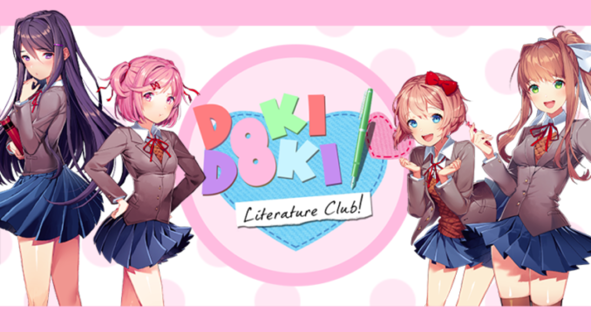

Doki Doki Literature Club
Olá, Monika aqui! Bem-vindo ao Clube de Literatura! Sempre foi um sonho meu fazer algo especial com as coisas que amo. Agora que você é membro do clube, pode me ajudar a realizar esse sonho neste jogo fofo! Todos os dias são repletos de bate-papos e atividades divertidas com todos os meus adoráveis e únicos sócios do clube: Sayori, a jovem feixe de luz do sol que mais valoriza a felicidade; Natsuki, a garota enganosamente fofa que dá um soco assertivo; Yuri, o tímido e misterioso que encontra conforto no mundo dos livros; ... E, claro, Monika, a líder do clube! Este sou eu! Estou muito animado para que você faça amizade com todos e ajude o Clube de Literatura a se tornar um lugar mais íntimo para todos os meus membros. Mas já posso dizer que você é um amor - promete passar o máximo de tempo comigo? ♥
⬇ Download